Brief
This animation is a site-specific piece designed specially to fit a 120 x 10 ft screen wall inside of the IAC Building in Chelsea, New York City. In order to best accommodate the special screen size and to fully embrace that space, we chose to design a story based around one character set inside a wild and grand environment with nature, hoping to create a subtle feeling of solitary within the vast setting.
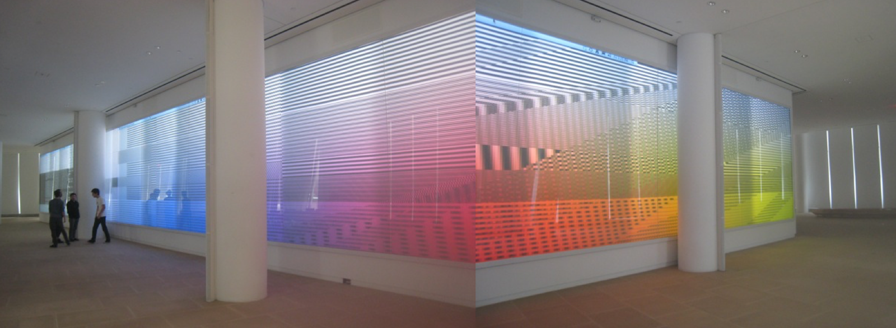Storyboard
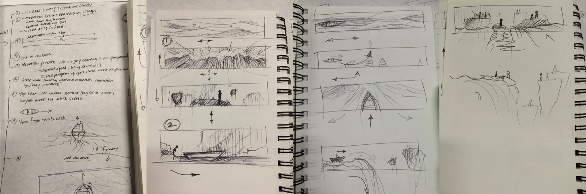This is a quiet world, with its boundless ocean, dazzling sun, and icebergs. But there is nothing much found in this wilderness except for one mannequin and his boat. Nobody can tell exactly where is it in the world, or is it even in our world? This is a story about his travels in the boat and perhaps his internal, tranquil world that is projected throughout his journey.
Inspired by the game Inside World, my partner and I chose the mannequin figure and crafted a story about him boating through an ocean body, passing by floating islands and encountering a bunch of other figures just like him in the end.
We started out with the idea of trying to cast out the feeling of being left out in the world and being a non-significant figure in society. But as the story goes on, we felt a strange feeling of peace from this world we created, and it has something to do with our character being a mannequin figure.
Highlights
The opening scene begins in the middle of the vast, open waters, the visual emphasized to represent the natural ocean. Water is perhaps the hardest element in nature to be animated, and oftentimes it is difficult to achieve results that are close to feeling natural. But I still tried my best to animate water turbulence and ocean foam that results from frequent water bouncing towards the rigid body of the boat, aiming for the most natural feel to the animated water.
Turbulent water surface:
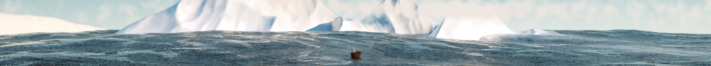Foam in details:
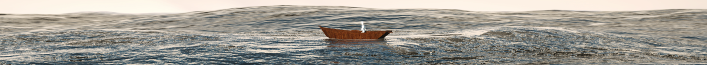The second scene takes place underwater. While the caustic light reflection and refraction were uncompromisable in the visual, we performed tons of tests and retests before the whole environment finally looked right. Next, the water splash from the scene where the mannequin drops out of the boat and enters the water, was also done with careful animation and physics tags, such as soft body and rigid body simulation.
Caustic light:
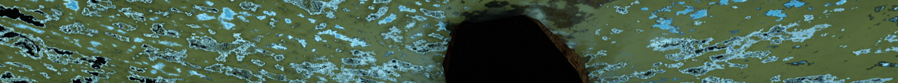Deep sea environment:
The last scene we animated was the world where the mannequin leaves water and enters a world that is different from the one he was in before. Some highlights here are the floating rocks and numerous floating boats that appeared gradually while approaching to the very end of the piece, which served as a grand reveal for the story—a world full of lonely mannequins like himself.
Boat and islands:
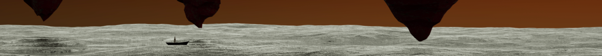Cinematography
Besides meticulously designing the set itself, another big effort I made in order to best adapt the story for this special screen size, was setting different camera movements, even within the same scene. I primarily used establish shots to facilitate and develop the emotions that audience would have toward the mannequin.
360 spanning
Stress on the mannequin being along in the middle of the water and with no one like him anywhere.
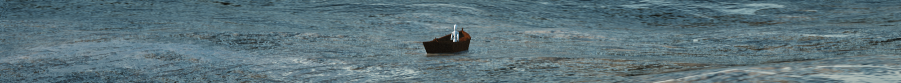 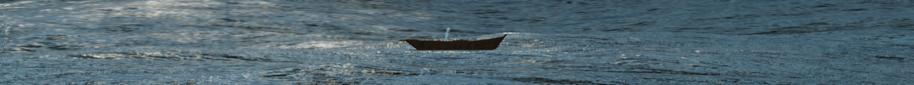 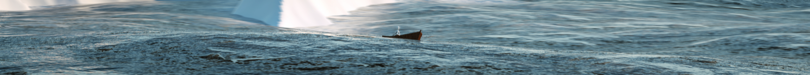 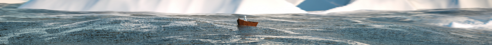Underwater cover
Illustrating the mannequin’s falling process at a slow pace and extravagant in the emotion by forcing the audience into a perspective that they wouldn’t normally take to see the story.
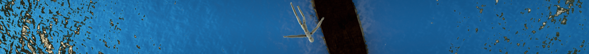 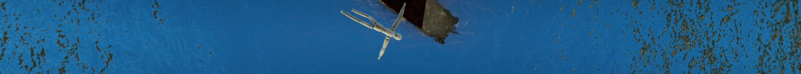Bird's eye view
Applying an overlooking camera to the scene with floating islands. By looking down on the water and islands, the figure and his boat look insignificant compared to the environment.
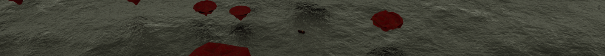Sideview revealing
In the scene that reveals more boats on the ocean, I set the pace by setting the camera on the far side and with the as the target at 2/3 section from the left of the entire screen in order for the audience to see the boat at all times, but also so they could notice the boats that gradually appear from the 2/3 from the right. This camera preserved the static object while introducing the new dynamic and altogether formed a visual balance throughout the 120ft-long screen.

Visual Style
I used a really simple model of the boat and and of the character to illustrate a simple world that is supposed to have very little going on. The design strategy turned out to match my minimal visual style and color spectrum. I had a few rendered versions that I previously designed to match what my mind thinks of as a “tranquil world”. Below are a few stills of different styles of representation.
V1
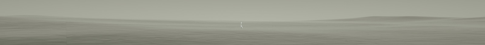 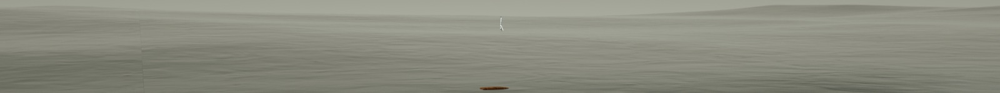 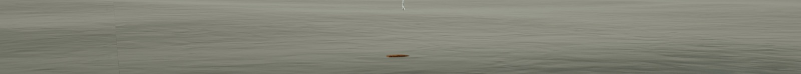V2
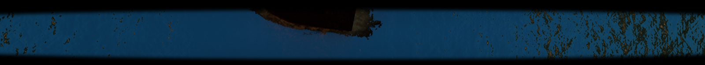Composition
My partner composed all of the Cinema4D renders together in AE and added sound layers and a few modifications to the visuals. The whole composition followed the story timeline we marked down earlier in the process. The music piece we chose was the “None But the Lonely Hearts” by Tchaikovsky. The classic piano sale and peaceful tone fits the storyline well.
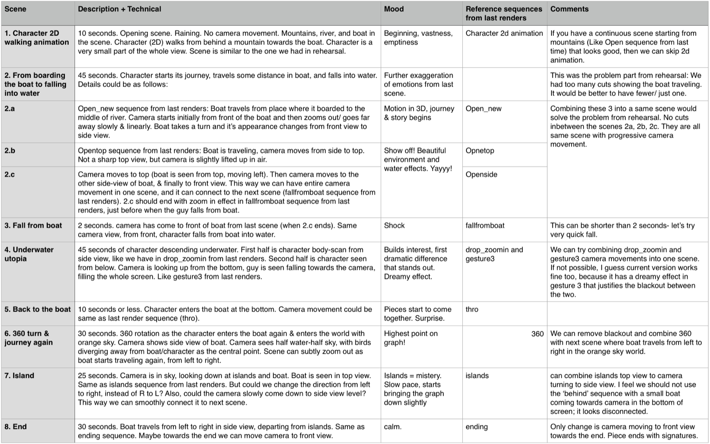Production
A big part of this project was to manage the render times with the minimal availability of only 1 MSI laptop with dual 1080 Graphic Cards and 2 MSIs with one 980 Graphic card in each. All final renders were done within the last 2 weeks before the actual show which posed a big challenge for me to plan out the rendering time in the most efficient way that would also leave sufficient time for post-production. I divided my story into 3 major scenes (on the sea , underwater, the final meet) and kept rendering two scenes while working on one of them. In this way I was able to work efficiently by keeping all of the machines from being idle and optimizing the rendering process to the maximum capacity.